地政学
ティラナはアドリア海とバルカン内陸を結ぶ首都です。EU加盟交渉、NATO、コソボ、移民、港湾回廊が政治を動かします。小国の中心でありながら、欧州と地域秩序を見続ける都市です。外交の重みも街に深く強くあります。
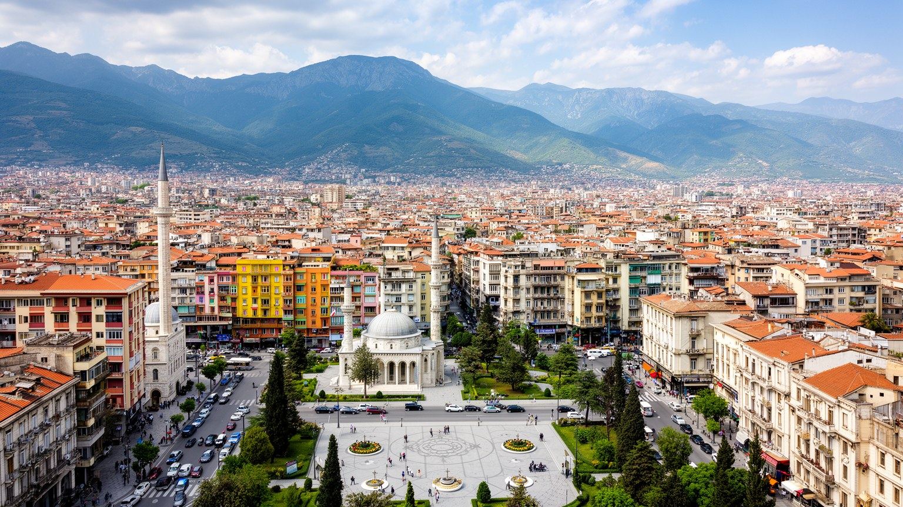
🇦🇱 アルバニア共和国 / 首都 / World City Atlas
オスマン都市、社会主義国家の首都、移行期の混乱、建設ブーム、若いカフェ文化が重なるアルバニアの中心です。広場、住宅、宗教、政治、山麓の水を読むと、バルカンの変化が日常の街路に見えてきます。
都市の骨格
ティラナは大都市圏の規模だけでなく、国家再編の密度で読む都市です。中心広場、旧社会主義の記憶、宗教施設、大学、建設現場、渋滞、カフェ、ダイティ山への道が、アルバニアの現在を近い距離で結びます。
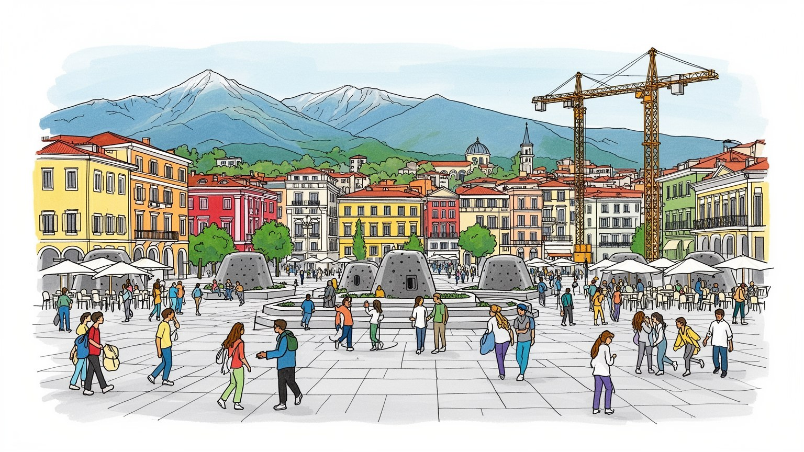
ティラナはアドリア海とバルカン内陸を結ぶ首都です。EU加盟交渉、NATO、コソボ、移民、港湾回廊が政治を動かします。小国の中心でありながら、欧州と地域秩序を見続ける都市です。外交の重みも街に深く強くあります。
行政、建設、金融、通信、飲食、教育、観光が雇用を広げます。地方から若者が集まり、海外送金や帰国投資も街を動かします。賃金上昇と住宅高騰の間で、働く場所と住む場所の距離が課題になります。格差も見えます。
モスク、教会、ベクタシュ教団、世俗的な広場文化が近くにあります。独裁期の無神論政策を経たため、宗教は信仰だけでなく、記憶と寛容を語る入口です。カフェ、音楽、映画祭も街の開放感を育てます。多声的な首都です。
旅行者は広場、国立博物館、バンクアート、ブロック地区、ダイティ山を巡ります。住民は渋滞、家賃、学校、カフェ、夏の暑さ、週末の郊外を使い分けます。観光の明るさの奥に、変化の速い日常があります。歩けば見えます
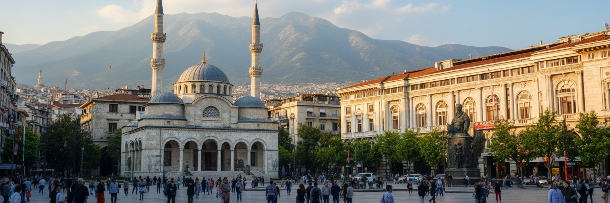
ティラナの中心を読む入口はスカンデルベグ広場です。騎馬像、国立歴史博物館、時計塔、エトヘム・ベイ・モスク、オペラ劇場、行政機関が向き合い、アルバニアの歴史を一つの空間に集めています。広場は社会主義期には権力を示す大きな舞台でしたが、現在は歩行者、子ども、観光客、デモ、式典、待ち合わせが重なる公共空間になっています。石舗装の大きな面は国土各地の素材を象徴的に使い、地方と首都の関係も示します。広場の周囲には新しい高層建築やホテルも増え、古い国家の記憶と投資の速度が同時に見えます。ここでは宗教施設、国民英雄、近代国家、社会主義の展示、欧州志向の都市デザインが近い距離で接します。観光客には写真を撮りやすい中心地ですが、住民にとっては政治的な集会や日常の散歩に使う場所でもあります。広場の広さは、ティラナが小さな首都から全国を代表する都市へ変わる過程を映します。空いた面が多いからこそ、政治の声も祝祭の光も受け止められます。夜には照明とカフェの人通りが増え、昼とは違う市民の舞台になります。雨の日には大きな舗装面が静まり、周辺のアーケードやカフェに人が寄ります。晴れた日は山の稜線が背景に現れ、首都が盆地と強く結ばれていることも分かります。広場は飾りではなく、国家の記憶を日常へ戻す装置です。街の尺度も見えます。
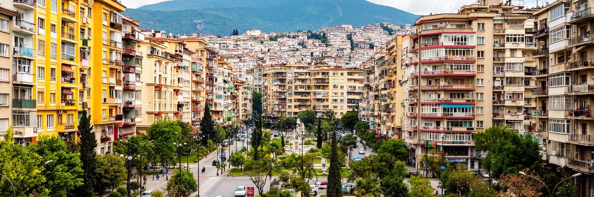
ティラナは社会主義体制の崩壊後、急速に姿を変えた首都です。かつて閉ざされた国家の行政都市だった街には、地方からの人口流入、民間商業、海外資本、車社会、広告、カフェ、建設現場が一気に入りました。二〇〇〇年代には灰色の集合住宅を鮮やかな色で塗る都市政策が注目され、街は移行期の不安と希望を視覚的に語るようになりました。色彩は単なる装飾ではなく、無秩序に増えた建物や公共空間への関心を取り戻す試みでした。一方で、成長の速度はインフラ、下水、道路、学校、緑地、法制度に強い負荷をかけました。社会主義期の記念碑や地下壕は、観光資源にもなっていますが、政治的抑圧や孤立の記憶を含みます。ティラナを歩くと、古い計画都市の軸線と、移行期に広がった自発的な建築が折り重なっています。この重なりはきれいに整理された欧州首都とは違う迫力を持ちます。市民は変化を誇りに感じながら、同時に失われる低層の街並みや公共性も意識します。広場の再設計や建物の色は、首都を明るく見せるだけでなく、市民が公共空間を自分のものとして使い直すきっかけにもなりました。社会主義後のティラナは、過去を消すのではなく、色、展示、建設、カフェ文化によって新しい読み方へ変えてきた都市です。その変化の速さこそが、街の魅力であり課題でもあります。記憶も残ります。
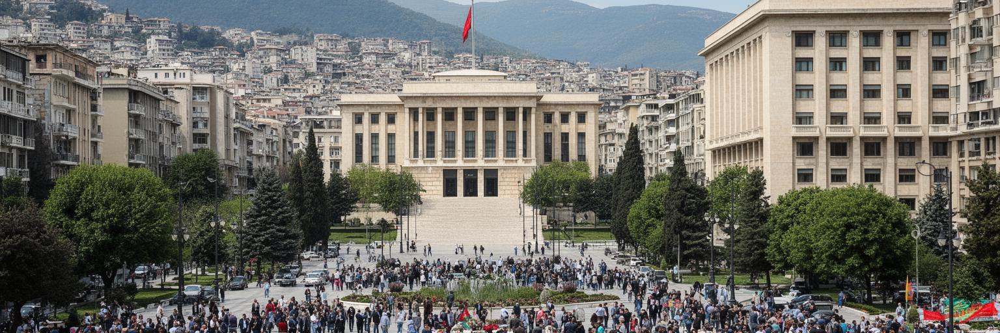
ティラナはアルバニア政治の集中点です。議会、首相府、省庁、政党本部、憲法機関、大使館が集まり、広場や大通りは選挙、抗議、追悼、祝祭の舞台になります。アルバニアは社会主義体制の孤立から市場経済と多党制へ移り、現在はEU加盟交渉、司法改革、汚職対策、メディアの自由、若者の国外流出と向き合っています。これらの課題は抽象的な国家政策ではなく、ティラナの路上に可視化されます。デモ隊が大通りを進み、カフェで政治談義が続き、役所の周辺には手続きや陳情の人が集まります。首都には権力の近さがありますが、その近さは市民の不満も早く集めます。欧州統合への期待は高い一方、生活費、賃金、住宅、行政サービスへの不満もあります。ティラナの政治空間は、古い国家建設の象徴と新しい欧州基準の要求がぶつかる場所です。NATO加盟国としての安全保障、コソボや周辺国との関係、移民社会とのつながりも、首都の外交機能を重くします。観光客には明るいカフェ都市に見えても、政治の緊張は広場、警備、壁の落書き、新聞、選挙ポスターに残ります。大使館街や国際機関の周辺では、国内改革が外部の監視や支援と結びつく様子も見えます。市民団体や学生の声も、制度改革を求める圧力として街に現れます。この街では、民主化が完了した出来事ではなく、毎日の交渉として続いています。
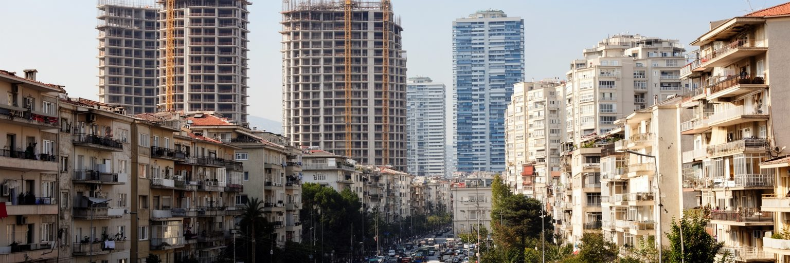
ティラナの近年の印象を強めているのは建設です。中心部には高層ビル、ホテル、オフィス、商業施設、集合住宅が増え、郊外には新しい住宅地と道路が伸びています。地方からの移住、海外在住アルバニア人の投資、観光需要、サービス業の成長が不動産市場を押し上げ、建設は雇用と税収を生む重要産業になっています。一方で、家賃と住宅価格の上昇は若者や低所得層に重く、古い近隣関係や低層住宅は再開発の圧力を受けます。急速な建設は都市の近代化を示しますが、日陰、交通、学校、下水、緑地、防災、景観の調整が追いつかなければ、暮らしの質を下げます。ティラナでは合法化や所有権の問題も都市形成に影響してきました。社会主義後の混乱期に広がった非公式な建築を、どのように都市計画へ組み込むかは長い課題です。新しい塔が首都の自信を表す一方、住民は通勤時間、駐車、騒音、空気、子どもの遊び場を日々気にします。建設都市としてのティラナを評価するには、投資額や外観だけでなく、誰が中心部に住み続けられるかを見る必要があります。短期賃貸や投資目的の住宅が増えると、中心部の生活店や近隣関係も変わります。住宅政策が弱ければ、成長の利益は一部の所有者に偏り、若い世帯は郊外へ押し出されます。住まいは経済成長の結果であると同時に、社会的な公平さを測る最も近い指標です。
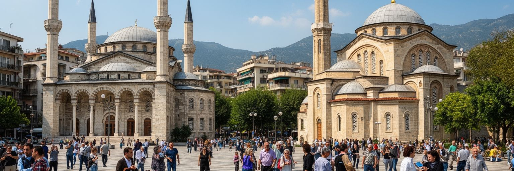
ティラナの宗教風景は、アルバニア社会の複雑さをよく示します。市内にはモスク、正教会、カトリック教会、ベクタシュ教団の施設があり、信仰の境界はしばしば家族や地域の記憶と結びます。オスマン期のイスラム文化、バルカンのキリスト教、ベクタシュの精神性が残る一方、社会主義期には国家が無神論を掲げ、宗教施設や信仰生活は強い抑圧を受けました。そのため現在の宗教復興は、単に昔へ戻る動きではなく、途切れた記憶を再び公共空間へ置き直す過程です。スカンデルベグ広場のモスク、近代的な大聖堂、正教会の新しい建物は、首都が多宗教の共存を見せる場所になっています。ただしティラナの日常は強く世俗的でもあります。若者はカフェ、大学、職場、SNSを通じて宗教よりも都市的な生活感覚を共有することが多いです。宗教的寛容はアルバニアの誇りとして語られますが、それは自動的に続くものではなく、教育、政治言説、地域社会の配慮によって保たれます。ティラナでは信仰が対立の線になりにくい一方、移民、格差、外部資金、歴史解釈をめぐる緊張もあります。祝祭日には家族や友人が宗教の違いを越えて訪ね合う場面もあり、寛容は理念だけでなく生活の作法として育っています。宗教施設をめぐって歩くと、この都市が信仰の多様さと世俗的な日常を同じ街路で扱っていることが分かります。
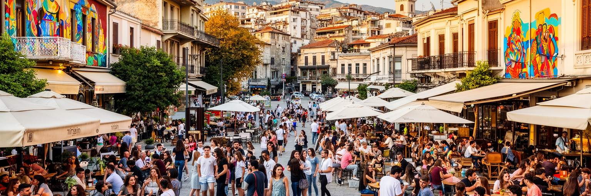
ティラナの街を歩くと、カフェの多さがすぐに分かります。ブロック地区や中心部の通りでは、朝のエスプレッソ、昼の打ち合わせ、夕方の散歩、夜の音楽が連続し、カフェは飲食店以上の公共空間になっています。社会主義期に指導部の居住地区だったブロックは、体制崩壊後にバー、レストラン、クラブ、店舗が集まる象徴的な地区へ変わりました。この変化は、閉ざされた権力空間が市民の消費と会話の場へ開かれたことを示します。ティラナの文化は、国立劇場や美術館だけでなく、映画祭、壁画、デザイン、ポップ音楽、書店、大学周辺の議論、移民経験を持つ若者の感覚からも作られています。イタリア語、英語、ギリシャ語、ドイツ語など海外との接点が強く、外へ出た人の経験が戻って街の味や働き方を変えます。一方で、カフェ文化は自由で明るいだけではありません。長時間滞在できる場が多い背景には、若者の雇用不安や賃金の低さもあります。公共図書館や公園が不足する場所では、民間のカフェが居場所を代わりに担います。ティラナの文化的な力は、公式文化と路上の会話が近いことです。新しいレストランやギャラリーは、帰国者や外国人滞在者を巻き込み、街の表現をさらに混ぜています。コーヒーの小さなテーブルを囲む時間が、政治、仕事、恋愛、移住、帰国の話をつなぎ、都市のリズムを作っています。
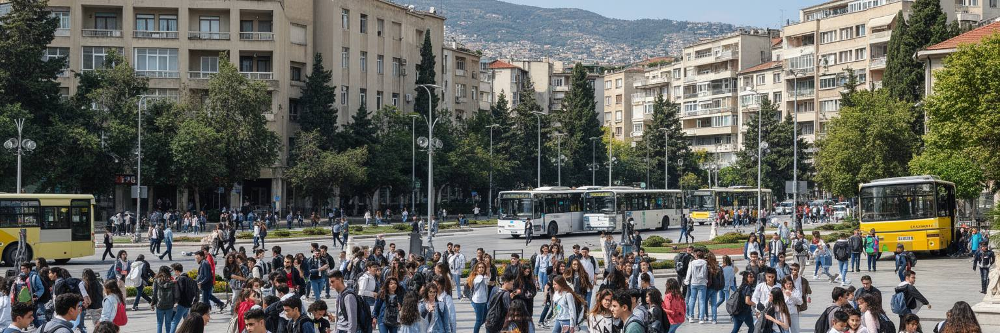
ティラナはアルバニアの教育と若者の中心です。大学、専門学校、研究機関、語学学校、民間研修、IT企業、国際機関の事務所が集まり、地方から多くの学生が移ってきます。若者にとって首都は、学位、仕事、友人、文化、海外への入口がそろう場所です。カフェでの勉強、共同住宅、アルバイト、インターン、英語やイタリア語の学習は、都市生活の普通の風景になっています。一方で、教育を受けた若者ほど国外就職を考えることも多く、ティラナは人材を集めながら失う都市でもあります。医師、技術者、学生、サービス業の働き手が欧州へ移る流れは、家族、大学、企業、政府に影響します。首都の課題は、若者を引き止めることだけではありません。海外経験を持つ人が戻りやすく、起業や研究や文化活動を続けられる環境を作ることです。住宅費、賃金、交通、保育、公共空間の質が、その判断を左右します。ティラナの若い雰囲気は観光客にも魅力的ですが、その背景には進学機会の集中と地方の選択肢の少なさがあります。大学都市としての力を社会全体の活力へ変えるには、教育の質、実務経験、研究投資、透明な採用が必要です。図書館、研究室、学生寮、手頃な食堂、夜でも安全に帰れる交通は、若者の可能性を支える基礎になります。若者が街に残る理由を増やせるかどうかが、ティラナの次の成長を決めます。
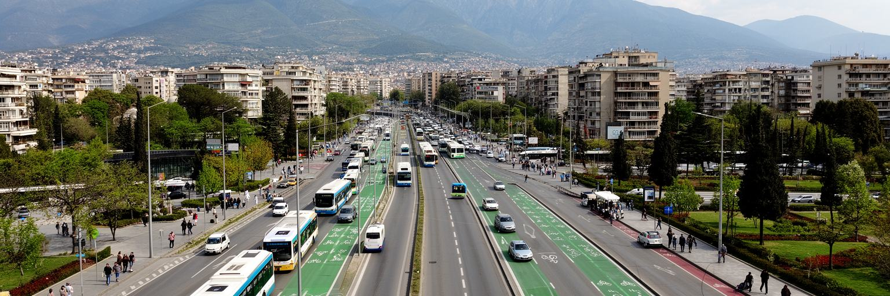
ティラナの日常を支配する課題の一つは移動です。社会主義期には自家用車が限られていましたが、体制崩壊後に車が急増し、道路、駐車場、空気、歩道の使い方が大きく変わりました。中心部では歩行者空間や自転車レーン、バス路線の改善が進みますが、郊外化と建設の速度に交通インフラが追いつかない場所もあります。朝夕の渋滞は通勤者の時間を奪い、バスの信頼性や歩道の安全にも影響します。空港、ドゥラス港方面、北南回廊、山麓の住宅地を結ぶ道路は、首都経済の動脈です。交通は単なる技術問題ではなく、誰が中心部へ近づけるか、学生や高齢者がどれだけ自由に動けるか、観光客が公共交通を使えるかを決めます。近年のティラナは広場の歩行者化や公共空間の再設計で評価されますが、都市全体では車依存をどう減らすかが残ります。鉄道や広域交通の弱さも、都市圏の一体的な成長を難しくします。移動の質が上がれば、住宅の選択肢、観光の回遊、空気の改善、子どもの安全が同時に良くなります。バス停の日陰、乗り換え案内、歩道の段差、横断歩道の待ち時間のような細部も、毎日の疲れを左右します。小さな改善の積み重ねが信頼を作ります。ティラナの交通政策は、見栄えのよい中心部だけでなく、郊外から通う人の時間を短くする必要があります。歩ける首都への転換は、都市の公平性を試す仕事です。
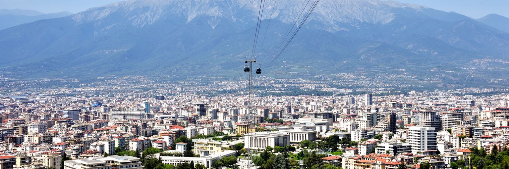
ティラナの魅力は中心広場だけではありません。市街の東にはダイティ山が立ち、ロープウェーや展望地から首都の広がり、盆地、郊外化、遠くの平野を眺められます。山は週末の休息、観光、レストラン、ハイキング、家族の外出の場であり、都市が急速に密度を増すほど重要な余白になります。人工湖公園や緑地も、住民にとって暑さを避け、歩き、走り、子どもを遊ばせる場所です。ティラナの観光は、国立歴史博物館やバンクアートのように政治記憶をたどる旅と、山やカフェを楽しむ軽い旅が同居します。近年はバルカン旅行の入口として注目され、物価、食文化、若い雰囲気、海岸や山岳地帯へのアクセスが魅力になっています。一方で観光の成長は、中心部の宿泊、短期賃貸、交通、廃棄物、公共空間の使い方に影響します。山への開発が進みすぎれば、自然と眺望の価値も弱まります。ティラナにとって観光は、国の暗い過去を展示に変え、新しい都市の明るさを伝える機会です。日帰り客が多い都市だからこそ、夜の文化、食、近郊の自然をつなぎ、滞在を深める工夫も重要になります。しかし持続させるには、山、公園、博物館、地区の生活を壊さないバランスが必要です。緑を守る判断も観光政策の一部です。山から街を見下ろすと、首都の成長が一望でき、その速さと脆さも同時に見えてきます。
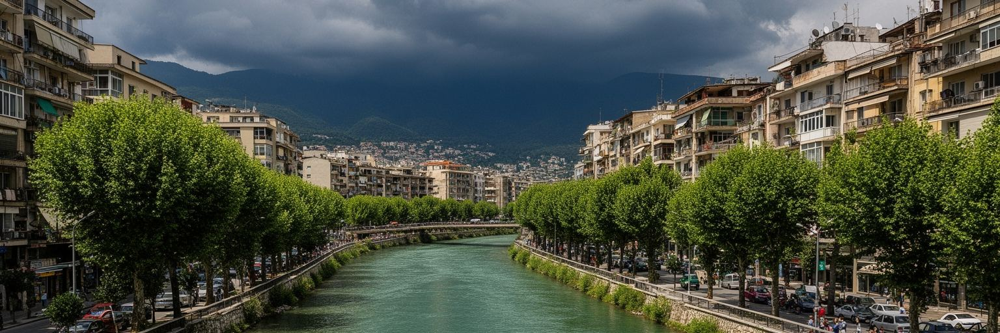
ティラナは内陸性の強い地中海性気候の中にあります。夏は暑く乾き、日差しの強さが街路の歩きやすさを左右します。冬は雨や霧が増え、山地からの水、川、排水、舗装面の管理が重要になります。急速な建設と自動車交通は、ヒートアイランド、大気汚染、雨水の流れ、緑地不足を悪化させやすいです。都市が広がるほど、低地の水路や斜面の開発は慎重に扱う必要があります。ティラナ川やラナ川の周辺は、かつて生活排水や非公式な建築の問題を抱えましたが、再生の対象にもなっています。水辺を整えることは景観改善だけでなく、洪水リスク、衛生、歩行環境、住民の健康に関わります。暑さへの適応も同じです。街路樹、日陰、公共水飲み場、公園、透水性のある舗装、バス待ち環境は、観光客だけでなく高齢者や子どもの安全を守ります。ティラナの気候問題は、大規模な自然災害だけでなく、毎日の移動と体調に現れます。建物の断熱、冷房費、電力需要も家計を圧迫します。夏の夜に熱が残る地区では、住宅の質や緑の少なさが健康格差として表れます。学校や職場の時間設計、医療の備えにも関わります。成長する首都が気候に強くなるには、建設の量よりも空間の質を重視する必要があります。水と緑を都市の余りではなくインフラとして扱えるかが、これからのティラナの住みやすさを決めます。
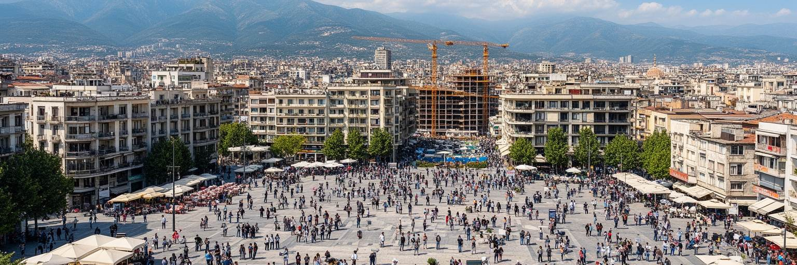
ティラナを読む面白さは、変化の速さが街路の細部に現れることです。スカンデルベグ広場には国家の歴史が集まり、ブロック地区には体制転換後の自由な消費と会話があり、郊外には建設と住宅の圧力があります。モスク、教会、ベクタシュ教団の施設は宗教共存を示し、バンクアートや博物館は孤立と抑圧の記憶を語ります。大学とカフェには若者の期待があり、空港道路や渋滞には国外移動と首都集中の現実があります。ティラナは西欧の整った首都とは違い、未完成で、時に粗く、しかし強いエネルギーを持っています。その未完成さは欠点だけではありません。社会主義後の制度改革、欧州統合、移民、帰国投資、観光、都市デザインが同時に進むため、街は常に書き換えられています。重要なのは、明るいカフェや新しい塔だけで首都を理解しないことです。住宅費、公共交通、汚職への不信、地方との格差、若者の国外流出も同じ都市の一部です。ティラナはアルバニアの希望と不安を最も近い距離で見せる場所です。さらに、山や水辺や郊外の住宅地まで見ると、中心部の華やかさを支える日常の負担も分かります。広場から山を眺め、建設現場の横を歩き、カフェで人の話を聞くと、この都市が過去を抱えながら未来へ急いでいることが分かります。その急ぎ方を丁寧に読むことが、ティラナを理解する近道です。